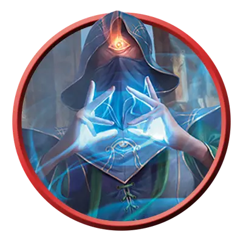

Циклоп оракул
Cyclops Oracle
Огромный Великан, Хаотичный Нейтральный

Класс Защиты 16 Инициатива +8 (18)
Хиты 207 (18к12 + 90)
Скорость 40 футов
| мод | спас | ||
|---|---|---|---|
| СИЛ | 22 | +6 | +6 |
| ЛОВ | 11 | +0 | +0 |
| ТЕЛ | 20 | +5 | +9 |
| мод | спас | ||
|---|---|---|---|
| ИНТ | 16 | +3 | +3 |
| МДР | 18 | +4 | +8 |
| ХАР | 10 | +0 | +0 |
Чувства пассивное Восприятие 22, Истинное зрение 30 футов
Языки Великаний
Опасность 10 (5 900 опыта; БВ +4)
Действия
Мультиатака. Циклоп совершает три атаки Лучистым ударом или Вспышкой света в любой комбинации.
Лучистый удар. Бросок рукопашной атаки: +10, досягаемость 10 фт. Попадание: 22 (3к10 + 6) урона Излучением.
Вспышка света. Бросок дальнобойной атаки: +10, дистанция 120 фт. Попадание: 17 (2к10 + 6) урона Излучением, и цель совершает с Помехой броски атаки до конца следующего хода циклопа.
Сотворение заклинаний. Циклоп оракул сотворяет одно из следующих заклинаний, не нуждаясь в Материальных компонентах (заклинательная характеристика — Мудрость, Сл спасброска заклинаний 16):
2/день каждое: Магический глаз, Обнаружение магии, Поиск объекта
1/день: Знание легенд
Реакции
Предзнаменование (Перезарядка 4–6). Условие: Циклоп или видимый им союзник совершает Тест к20. Эффект: Циклоп бросает 1к20 и решает, использовать ли новый бросок вместо прежнего результата для Теста к20.
Бонус мастерства +4
Среда обитания Горы, Луга, Прибрежье, Подземье, Пустыня, Холмы
Сокровища Оружейные
Циклопы
Одноглазые хранители предначертанного
Циклопы — исполинские одноглазые потомки богов. Обращаясь к своему мистическому взору, они способны прозревать, каким образом скорее всего развернутся грядущие события.
Циклопы оракулы проницают взглядом анналы истории, дабы постичь сокрытые истины. Многие из них делятся этими тайнами с теми, кто помогает им исправить ошибки минувшего.